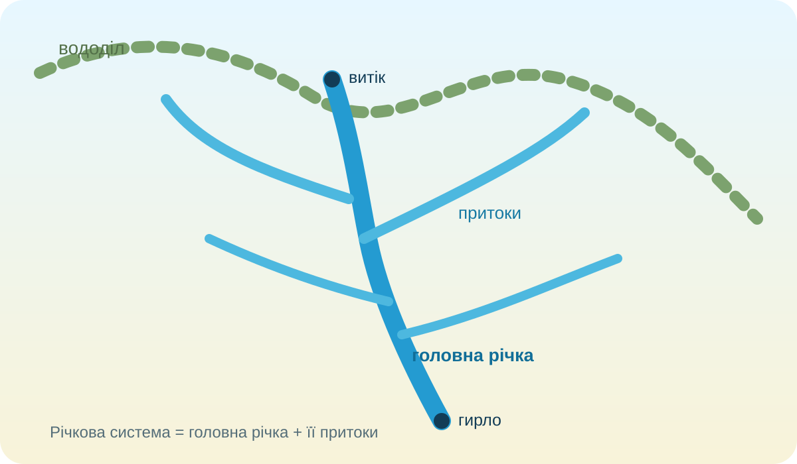
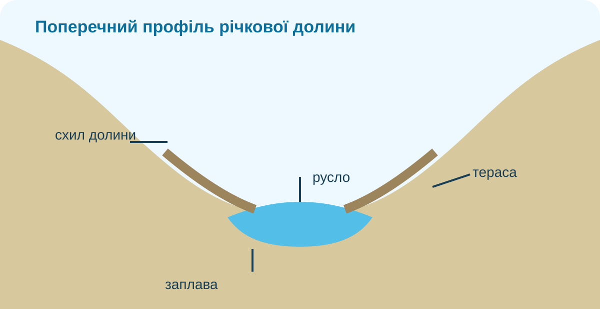

1. Віртуальна подорож Дніпром
Перемикайте точки. На реальній карті OpenStreetMap простежте, як змінюється річка від верхів’я до гирлової області.
2. Практична робота: нанесіть річки на карту
КТП вимагає знайти й позначити Дніпро, Дунай, Ганг, Ніл та Амазонку. Оберіть річку й поставте три точки приблизно вздовж її ходу: верхня → середня → нижня течія.
Позначте на карті приблизний хід річки «Дніпро» трьома кліками: верхня течія → середня → нижня.
Карта: © OpenStreetMap contributors. Автоматична перевірка допускає похибку, бо це навчальне нанесення на оглядову карту, а не геодезичне трасування русла.
3. Модель: басейн працює як збирач води

Знайдіть вододіл
Що найкраще описує вододіл?
4. Річка ≠ лише русло

На схемі є русло, заплава, схили долини й тераса. Під час повені вода може вийти з русла на заплаву — отже, заплава є частиною річкової долини, але не самого постійного русла.
Доказове завдання
Учень каже: «Якщо на супутниковому знімку видно воду, то це і є вся річкова долина». Чого бракує в такому висновку?
5. Живлення: звідки річка отримує воду?
Оберіть найреалістичнішу характеристику великої річки помірних широт.
Річки можуть мати дощове, снігове, льодовикове, підземне або змішане живлення; співвідношення змінюється за кліматом і сезоном.
6. Режим: не «характер», а зміни протягом року
Умовний гідрограф:
7. Реальні дані: басейн визначає, що відбувається з річкою
USGS пояснює басейн як територію, з якої всі струмки й опади стікають до спільного виходу. Підвищення між сусідніми басейнами утворюють вододіли. Саме тому стан річки залежить не тільки від того, що відбувається в руслі, а й від процесів на всій площі вище за течією.
8. Коротке відео: як супутники бачать річки
Подивіться фрагмент NASA про місію SWOT. Під час перегляду випишіть дві величини, які можна вимірювати з космосу, і поясніть, чому одного супутникового кадру недостатньо для опису водного режиму.
Офіційний матеріал NASA SVS: «SWOT Mission Unlocks a New View of Our Waterways».
9. Теорія — після дослідження
Річкова система
Головна річка разом з усіма її притоками.
Басейн річки
Територія, з якої поверхневий і частково підземний стік надходить до цієї річкової системи.
Вододіл
Межа між сусідніми басейнами, яка часто проходить по підвищеннях рельєфу.
Річкова долина
Витягнуте зниження, сформоване роботою річки; включає русло, заплаву, схили й часто тераси.
Живлення
Надходження води до річки з опадів, снігу, льодовиків і підземних вод.
Водний режим
Закономірні сезонні зміни рівня, водності, льодових явищ та інших характеристик річки.
10. CER — доведіть системність річки
Питання: чому сильна злива за десятки кілометрів від русла все одно може вплинути на рівень води нижче за течією?
11. Домашня робота
§41. Завершіть контурну карту: Дніпро, Дунай, Ганг, Ніл, Амазонка. Для однієї річки підпишіть витік, одну притоку, гирло та океан/море, до якого належить стік. Зробіть фото або ескіз власної моделі річкової системи.
Електронний підручник / ВШО →12. Фінальна перевірка — 10 балів
Тест відкриється лише після введення даних учня.